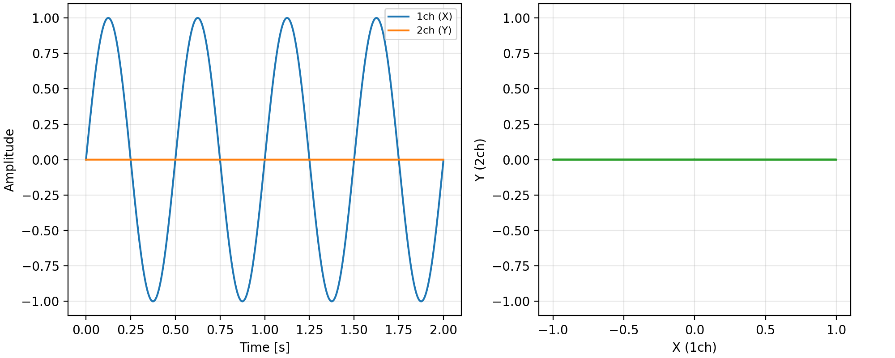
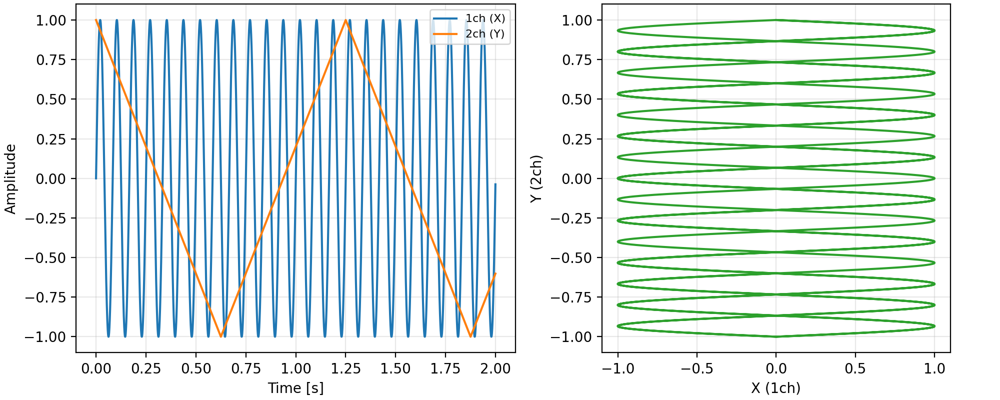
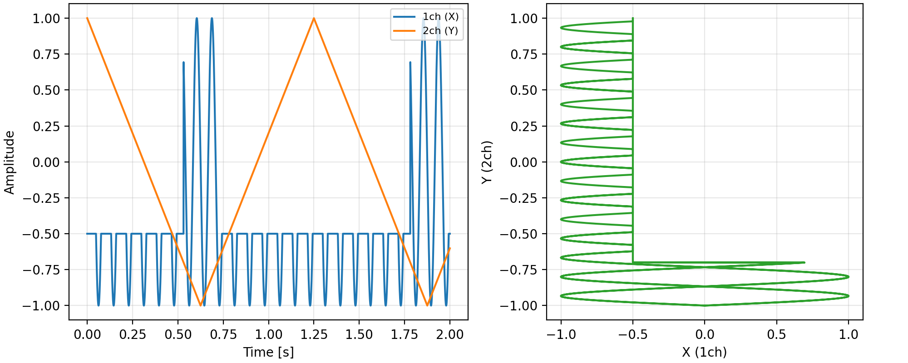

マイコンなし！アナログ回路だけで「L」チカ
画面に映る「Ｌ」の文字をアナログ回路でどう作るかの解説です
オシロスコープは、電気信号を目に見えるグラフにする道具です。通常は「時間とともに動くする波」を描きますが、
ＸＹモード
という設定にすると、2つの電圧をヨコ(X)とタテ(Y)の位置として使い、点の動きが図形として描かれます。

① ヨコだけ動かす
→ 横一直線
正弦波をヨコ(Ch1)だけに入れます。点は左右にしか動かないので、横向きの線になります。

② ヨコとタテを同時に動かす
→ 四角形
ヨコに速い正弦波、タテにゆっくりした三角波を同時に入れます。点が画面を塗りつぶすように動き、四角形に見えます。

③ 波形の一部を「削る」
→ 「Ｌ」の形
三角波である決まったタイミングだけ、正弦波を一定の電圧で削り取ります(クリップ)。四角形の一部だけが残って、「Ｌ」の形になります。